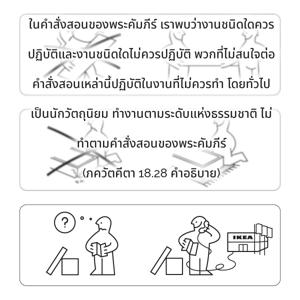

ผู้ทำงานที่ละเมิดคำสั่งสอนของพระคัมภีร์เสมอ เป็นนักวัตถุนิยม ดื้อรั้น ขี้โกง ชำนาญในการดูถูกผู้อื่น เกียจคร้าน อารมณ์เสียเสมอ และผัดวันประกันพรุ่งกล่าวว่าเป็นผู้ทำงานในระดับอวิชชา

ในคำสั่งสอนของพระคัมภีร์เราพบว่างานชนิดใดควรปฏิบัติและงานชนิดใดไม่ควรปฏิบัติ พวกที่ไม่สนใจต่อคำสั่งสอนเหล่านี้ปฏิบัติในงานที่ไม่ควรทำโดยทั่วไปเป็นนักวัตถุนิยม เขาทำงานตามระดับแห่งธรรมชาติไม่ทำตามคำสั่งสอนของพระคัมภีร์ ผู้ปฏิบัติงานเหล่านี้ไม่สุภาพ และโดยทั่วไปฉลาดแกมโกงและชำนาญในการดูถูกผู้อื่นเสมอ เกียจคร้านมาก ถึงแม้มีงานบางอย่างต้องทำแต่ทำไม่ดีและจะผัดไว้ทำภายหลัง ดังนั้นดูเหมือนว่าจะมีอารมณ์เสียอยู่เสมอ ชอบผัดวันประกันพรุ่ง สิ่งใดสามารถทำให้เสร็จภายในหนึ่งชั่วโมงก็จะลากทำไปเป็นปี ผู้ปฏิบัติงานเช่นนี้สถิตในระดับอวิชชา